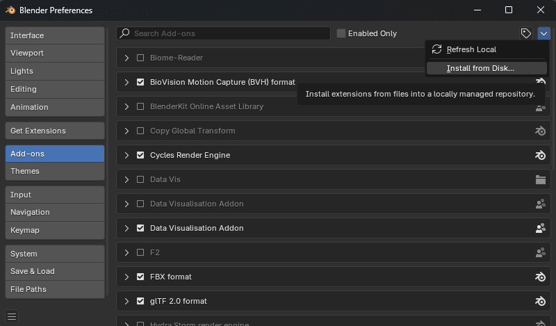
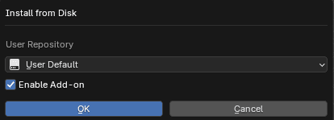
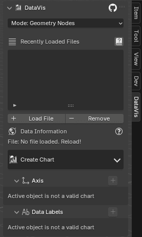
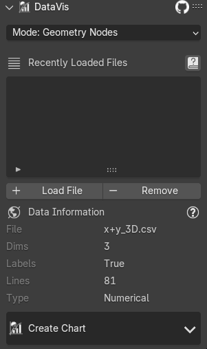
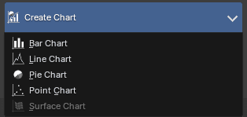
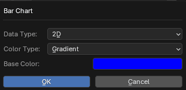
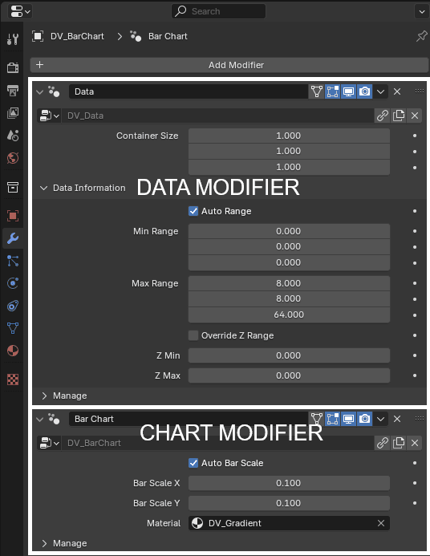

Quickstart
Installation
Download the data_vis_VERSION.zip from BlenderMarket, Gumroad or Github.
Either drag & drop it into Blender or install in Blender preferences.
Open Blender preferences (Edit -> Preferences -> Addons). Click Install from Disk in the dropdown, select the .zip file and confirm.

Drag & Drop Installation
Drag the .zip into Blender's window, choose user repository and confirm

On successfull installation you should see DataVis panel in the N panel of 3D View.

Consult official Blender addon installation documentation for more information.
Creating Chart
Load custom data according to supported data formats or use one of the data examples. Then you should see loaded data in the data list.

Start creating a chart by expanding the Create Chart menu.

After selecting a chart a menu is shown - you can select how to interpret your data and some basic settings like base color.

Object with data and chart modifier will be spawned in your scene. The object's mesh contains your data points and the modifiers that create chart geometry.

Chart Operators work on Active Object
Animations, adding axis, labels and other features work based on the Active Object. The active object has to be a chart created through the addon for the other features to work.
Tweaking Data Range
You can find the Data modifier either in the Charts panel or Modifiers of the object.
Use Container Size to change the size of the chart. By toggling Auto Range you can adjust what data points are considered.
Tweaking Chart Specific Settings
Similarly to tweaking data range, you can find Chart modifier allowing you to tweak chart specific settings like bar size, or materials.
Adding Axis
Add individual axis inside the panel by one click or custom axis by clicking the + in the header of the Axis panel.
Tweaking Properties
Each axis is an additional geometry nodes modifier. Properties can be tweaked in the N panel or in the Modifiers panel.
Adding Data Labels
Add data labels by clicking + in the header of the Data Labels panel and tweak it in the panel afterwards.
Tweaking Properties
Data labels are an additional geometry nodes modifier. Properties can be tweaked in the N panel or in the Modifiers panel.
Adding Animation
Animation can be added by clicking the clock icon in the Chart panel.
Chart has to be created animated
In order for data animation to work, the chart has to be created in 3D+Animation or 2D+Animation data modes! If the chart is not created animated, it's only possible to animate in-out transitions.
2D
Creating 2D charts is possible by adding 2D data, or subsetting 3D data.
Visualising in 2D is preffered, as it doesn't induce any perspective distortion to the data values and
the same value in the chart is displayed at the same position. It's suggested to use Orthographic camera.